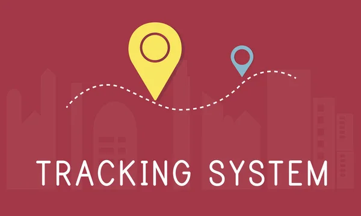

These websites use many tracking technologies to track users and collect their information online. This data is usually tracked in order to either improve the users experience or to better target ads.
Asides from cookies websites have multiple other ways to track their users. One common method used is tracking pixels. Tracking pixels are tiny, invisible images that are embedded in web pages or emails. These pixels when loaded up will send information like if a user visited a web page or opened an email back to a server.
Another Method these sites use is device fingerprinting. It collects information about someone's device such as things like the browser type, the system settings, and the screen resolution. They keep track of all of this in order to make a unique identifier which allows websites to track people even if cookies are disabled.
Behavioral targeting is another super common method used. This is where a user's browsing history, searches, and other digital interactions are analyzed in order to make a profile that will fit their interest. Advertisers will use this data to show more personalized ads that will appeal to the individual at hand. This method goes extremely well with the help of cookies.
A website will track its users for multiple reasons. A big reason would be for advertising revenue. By collecting data on a user's behavior, companies can send them ads made specifically for them. Targeted ads are way more important than your average advertisement since they target what the user likes. Another reason it is done is for analytics, as the tracking will help the website owner understand their user's behaviors and improve the sites' overall design, performance and content. To add on to this tracking helps with security by detecting suspicious activity.
Although tracking has its benefits, it also has its drawbacks. When looking at the benefits. Users can get a more personalized experience by including their saved preferences, content relevant to them, and a simple and quick browsing time. Because of the user data that they have, websites are able to improve their services, making the internet overall more efficient and user-friendly. Despite the benefits it produces, web tracking does have its drawbacks. Tracking can lead to many privacy concerns as lots of users may not know how much data is being taken from them or how it’s being used. Third party tracking can definitely make users feel uncomfortable as it follows them across multiple websites without a clear reason for doing that. Tracking can also put someone at risk of data breaches where the user’s collected would be exposed and or misused. Lastly, some tracking methods like fingerprinting aren’t easy to control, making it harder for people to protect their privacy.
| Benefits | Drawbacks |
|---|---|
| A Better Experience for Users | Multiple Concerns with Privacy |
| Content is more Personalized | Lots of Security Risks with A User's Data |